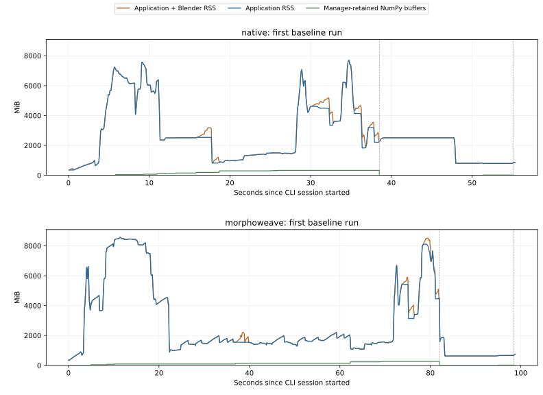

Measured 2 October 2026 · three small clams · before optimization
The additional MorphoWeave runtime is predominantly repeated OBJ parsing and formatting in the adapter path. Both backends have a separate, larger memory problem: validation of an 8192 × 8192 source texture keeps about 6 GiB of floating-point texture buffers alive at once.
Ten successful fresh-process runs covered both backends. The same backend produced identical SHA-256 hashes for 33 exported files and presentation arrays across all five of its runs. These checks establish that profiling preserved the measured outputs; they do not establish equivalence between the two numerical backends. No numerical implementation, upstream source, or execution strategy was changed.
Full measured tables · Machine-readable summary · Harness and metric definitions
The first table uses two baseline repeats per backend, reversing backend order on the second repeat. These are descriptive medians, not confidence intervals. Session time starts after imports and includes the complete CLI action chain. Process startup adds approximately three seconds. Baselines include task timers and retained-array accounting, but no function or allocation profiler.
| Measurement | Original Atlas (native) | MorphoWeave |
|---|---|---|
| Complete CLI session, median wall time | 55.36 s | 99.48 s |
| Atlas construction, alignment and texture transfer, median | 38.24 s | 82.67 s |
| Color-processing pipeline, median | 16.69 s | 16.40 s |
| Application CPU, median, all application threads | 45.93 CPU s | 90.42 CPU s |
| Completed Blender child CPU, median | 7.25 CPU s | 7.28 CPU s |
| Sampled peak application RSS, range across repeats | 7.52–8.18 GiB | 8.29–8.37 GiB |
| Maximum unique NumPy buffers retained by execution manager | 330.8 MiB | 267.2 MiB |
MorphoWeave took approximately 1.80 times as long overall and 2.16 times as long in the atlas-and-texture pipeline. The near-equal color-processing and Blender CPU times locate the difference mainly in the application-side atlas integration.
A separate pass added nested timers around selected boundaries, without a call profiler or allocation tracker. Its atlas pipeline took 36.86 s for native and 81.55 s for MorphoWeave, consistent with the baseline difference. The following function durations come from that timer pass. Inclusive duration includes any validation performed inside the codec.
| Operation | Native | MorphoWeave |
|---|---|---|
| OBJ reads | 3 calls · 5.71 s | 16 calls · 30.98 s |
| OBJ writes | 7 calls · 7.80 s | 19 calls · 29.43 s |
| Total OBJ codec wall time | 13.51 s | 60.41 s |
| OBJ codec exclusive calling-thread CPU | 13.05 CPU s | 58.71 CPU s |
| Logical OBJ bytes read | 224.8 MiB | 1,232.0 MiB |
| Logical OBJ bytes written | 325.8 MiB | 1,222.7 MiB |
| Source/output texture reads during atlas pipeline | 12 calls · 7.67 s | 12 calls · 7.72 s |
| Blender subprocess waits | 5 calls · 8.49 s | 5 calls · 8.72 s |
| Explicit mesh validation during atlas pipeline | 40 calls · 0.84 s | 59 calls · 1.45 s |
| Mesh-to-VTK conversion during atlas pipeline | 6 calls · 0.04 s | 17 calls · 0.11 s |
The extra OBJ time is 46.91 s, explaining essentially all of the 44.68 s atlas-pipeline gap in this pass; other stage differences offset part of it. Codec CPU is close to codec wall time. This points to text parsing, number formatting, and Python object handling rather than evidence of a storage-bandwidth bottleneck. Logical byte totals include repeated and cached access, and are not physical disk measurements.
The adapter's MorphoWeave._inputs writes all three source meshes once for mean construction and again for final alignment.
Upstream loads the reference mesh, reads and writes meshes for pre-alignment, imports the aligned population for its mean,
then reads and writes meshes during final alignment. The adapter reads those final outputs back into internal records.
Including common inspection and export, this becomes 16 reads and 19 writes, compared with native's 3 and 7.
The two upstream runAlign calls took 23.10 s inclusively; runMean took 6.01 s.
Those totals contain the same file handling already counted above, so they must not be added to it.
Inside runMean, denseCorrespondence took only 0.30 s for this dataset.
This evidence supports preserving the upstream algorithms while reducing serialization around them.
Thread-aware Yappi CPU captures independently identify the OBJ parsing/formatting call stacks:
native atlas CPU table and
MorphoWeave atlas CPU table.
Profiling every Python call inflated whole-process runtime to 246 s and 767 s respectively; those durations are excluded from the performance comparison.
Per-pipeline .pstats and readable tables are archived alongside these files.

Each panel has its own time range and the same memory scale. Dashed lines mark the end of atlas/texture processing and color processing. Green measures only arrays reachable from the manager's task-result table; it resets when that table is released. It excludes application-owned results, VTK objects, active-operation temporaries, and allocator retention.
The source textures are 8192 × 8192 RGBA PNG, 8192 × 8192 RGBA TIFF, and 4096 × 4096 RGBA PNG.
A single 8192² RGBA image in float64 occupies 8192 × 8192 × 4 × 8 = 2 GiB.
The 512 × 512 bake setting affects output textures; it does not reduce these source-image validation allocations.
Memray's tracked live-allocation peak was 7,130.7 MiB for native and 7,109.3 MiB for MorphoWeave, approximately 6.96 and 6.94 GiB. Both peaks occurred in the same pre-bake source-texture read, with these buffers simultaneously alive:
| Live allocation group at peak | Size in each backend | Evidence in source |
|---|---|---|
| Initial float64 RGBA representation | 2,048 MiB | io.py:402, TextureIO.read |
| Boundary validation copies of RGB and alpha | 2,048 MiB | serde.py:78, ArraySerde.floating → Arrays.frozen |
| Internal record validation copies | 1,536 MiB RGB + 512 MiB alpha | models.py:719, TexturePixels.validated |
| Decoded 8-bit TIFF | 256 MiB | Pillow TIFF decoding |
| Two RGB range-check masks | 192 MiB each | models.py:729 |
The three floating-point representations alone total 6 GiB, about 86% of the tracked live peak.
Blender.bake_specimen_texture calls TextureIO.read to validate the original texture before passing its path to Blender.
Inspection also performs full source-texture validation earlier. These transient allocations recur; they do not mean all source textures are cached simultaneously.
Inspect the call chains in the native allocation flame graph and MorphoWeave allocation flame graph. Baseline RSS exceeds the tracked heap peak because these are different runs and metrics: RSS includes imports, interpreter and library memory, allocator-retained pages, and other resident mappings. Changes in resident pages alone do not prove a memory leak.
Across the entire timer pass, Arrays.frozen returned copies totalling 19.49 GiB for native and 21.12 GiB for MorphoWeave.
This is cumulative copy traffic, not live memory. The 331/267 MiB manager-retained-array figures describe another distinct quantity:
population geometry and completed task arrays kept until the pipeline returns.
No fifty-specimen or full-clams run was performed. The current implementation is not a streaming population pipeline in either backend:
both inspect and retain the source meshes, and the serial manager keeps completed task results until the pipeline finishes.
Native also retains mean contributions. Upstream MorphoWeave's importPaired builds a group containing all meshes,
and runMean constructs a correspondence group before averaging.
The three source meshes require 91.7 MiB for raw vertex, triangle-index, and per-corner UV arrays (per-specimen dimensions and array sizes). Fifty meshes of the same average density would require approximately 1.49 GiB for those arrays alone, before aligned copies, correspondence, VTK, temporary arrays, Python objects, or textures. This is an illustrative geometry-size calculation, not a forecast of peak RSS.
Population geometry grows with specimen count. The large transient source-texture allocation depends mainly on the largest image dimensions and how many images are processed simultaneously. Multiplying the entire three-clam memory peak by 50/3 would therefore be misleading. Caching every decoded texture or every serialized mesh copy would add memory without addressing the ownership problem.
A bounded adapter cache can reduce duplicate transfers, but cannot by itself make upstream runMean stream one specimen at a time.
Its bulk population contract must remain explicit in any memory budget.
These priorities address two distinct measured costs: adapter serialization is the strongest MorphoWeave CPU opportunity, while shared texture handling is the strongest small-dataset memory opportunity. A faster IPC transport would not remove the OBJ conversions measured inside this single application process.
Core revision: 129c2e218c3eecce6b475a8a19279bf75d1f8b32.
MorphoWeave submodule: 6fd9e448fb3441b71f7fed2bec9434a9b2190d24.
The scale-restoration behavior is included. Upstream and production sources are unchanged.
macOS 26.6.2 arm64, 14 reported logical cores, 24 GiB RAM, Python 3.13.12, NumPy 2.5.3, SciPy 1.18.1, VTK 9.7.1, Blender 5.2.1, Yappi 1.7.6, Memray 1.20.0, and psutil 7.2.2. The resolved Blender executable and version were confirmed after the runs. Exact environment and input hashes are preserved in the initial environment record and the resumed environment record. Backend run metadata is archived for the first native and MorphoWeave baselines.
Inputs were only UF_IZ_507781, UF_IZ_507782, and UF_IZ_507879, prepared using the existing e2e fixture's RAS conversion outside the measurement.
The real Click client executed atlas creation, 512px baking, 1,000-face neighbor-averaged color sampling, PCA with two components,
axis changes, reconstruction, display, selection, export, and selection clearing through the shared application core.
Slicer UI startup/rendering and UMAP fitting were not profiled.
uv sync --group profiling uv run --group profiling python -m tools.profiling \ --output /tmp/interdeca-profile-new uv run --group profiling python -m tools.profiling.summarize \ /tmp/interdeca-profile-new
The default harness makes ten sequential fresh-process runs: two baselines, one nested-timer pass, one CPU pass, and one allocation pass per backend. This recorded experiment completed the timer passes last. No cold filesystem-cache assumption is made.
rusage.json.This archive includes generated tables, summary data, baseline process samples, task/pipeline/session boundaries for all runs,
CPU tables and profiles, allocation flame graphs, run configurations, output hashes, and environment records.
Original input/output meshes, all detailed function-span logs, and raw Memray captures remain at
/tmp/interdeca-profile.3quIrY/run (approximately 4.2 GiB); rejected captures are in the sibling rejected directory.
Temporary files are not a durable archive. These repository report files preserve the findings without duplicating the datasets.
evidence-sha256.json records the archived evidence hashes.